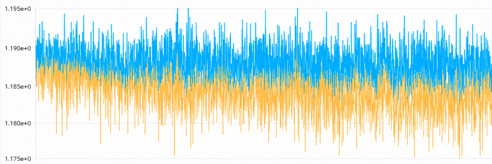
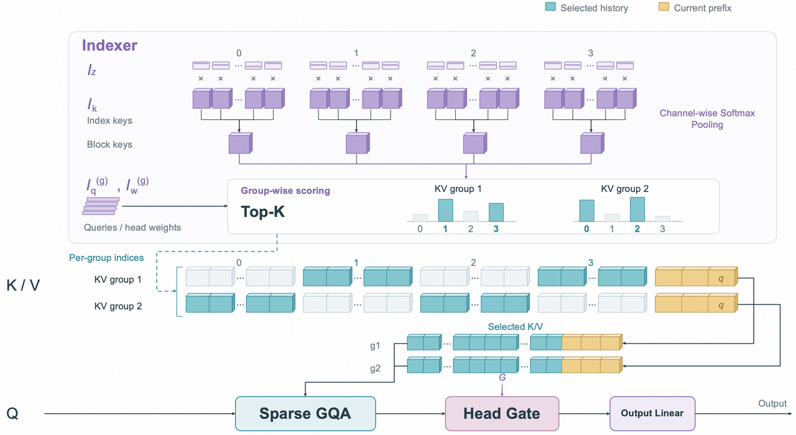
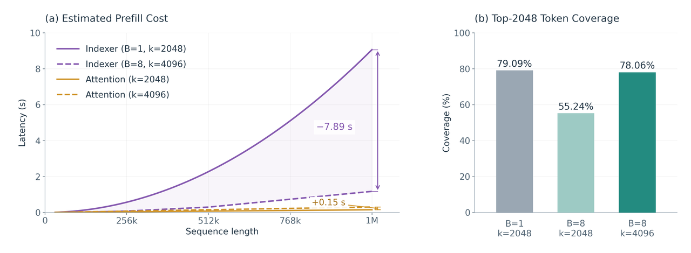

走进 Step 5 Preview：面向 agent 工作的架构与训练
Agent 工作负载对模型设计和训练提出了一组不同的要求。漫长且工具密集的轨迹，使得对大量 prefill 上下文进行推理变得更加重要，让长上下文计算日益昂贵，并为数据构建和强化学习带来了新的挑战。
Step 5 Preview 正是围绕这些约束设计的。在架构上，它采用由 92 个 transformer 块组成的窄而深的设计。它将 Gated Sliding Window Attention 与稀疏全局 attention 层交错排列，并在全局 attention 路径中使用 Sparse GQA，以支持高效的长上下文训练和推理。扩展这一设计的规模，也暴露出深层训练中的稳定性问题，促使我们重新审视数值精度与 gradient 处理。
在训练方面，我们构建了一个 agent 原生的数据构建系统，agent 在专家制定的原则与质量控制之下，协调合成过程中的部分环节。对于强化学习，我们关注那些随着 rollout 变长而愈发突出的系统和学习问题，包括训练与推理不一致、rollout 效率、上下文管理以及奖励归因。
以下各节介绍这些设计选择，以及促成它们的观察结果。
架构设计理念
深度对于多跳推理很重要 [1]。在 agent 任务中，多跳依赖无处不在；与此同时，由于频繁调用工具需要进行大量 prefill，模型没有太多机会开展充分的显式 CoT 推理，尤其是在考虑 token 效率时。因此，我们更倾向于在模型 prefill 过程中进行隐式推理 [2]。不过，我们知道，在 transformer 的 prefill 过程中，信息流沿时间轴与深度轴都是单向的，这意味着，追踪多跳依赖链的语义 embeddings 必须在后续 token 中单调地向更深层移动。因此，如果模型不够深，在长 prefill 场景中就很容易耗尽可用层数，使这种潜在的多跳推理无法进行 [3]。
Step 5 Preview 采用“窄而深”的架构。尽管已有一些研究路线尝试解决深度之困，例如循环或递归 transformer，我们采用了最简单的方法：直接增加深度。Step 5 Preview 由 92 个 transformer 块组成，深度与 Qwen3.8-Max、Kimi K3 等超大开源模型相当，而其总参数量和激活参数量分别不到这些更大模型的四分之一和三分之一。这种“窄而深”的架构，使 Step 5 Preview 具备可与万亿级模型媲美的长流程 agent 能力，同时保持低得多的成本。不过，我们发现，这种设计会引入一些训练不稳定问题。我们将在“训练稳定性”一节讨论这一问题。
Step 5 Preview 遵循 Step 3.5 [4] 以及社区的常见做法，以 3:1 的比例交错排列高效 attention 层与全局（稀疏）attention 层。对于高效 attention 部分，在研究多种架构（例如各种线性 attention 替代方案）与配置后，我们选择了 Gated Sliding Window Attention（Gated SWA）。我们发现，Gated SWA 与其他更复杂的选择之间，性能差距即便存在，也相当有限；而 Gated SWA 更容易高效实现，尤其是在考虑 speculative decoding 时。
Step 5 Preview 的全局 attention 部分基于 Gated GQA。为支持高效的长上下文训练和推理（最高 1M 上下文长度），我们提出 Sparse GQA，受 DSA [5] 启发，将稀疏索引机制引入标准 GQA。与原始 DSA 不同，我们进一步引入按块合并 token 的方式，减少索引器的开销。我们将在“Sparse GQA”一节讨论这一方法。
训练稳定性
与 [6, 8] 类似，我们采用混合精度 FP8 策略训练 Step 5 Preview。尽管如上所述，“窄而深”的架构有充分的动机，但在扩大训练规模时，我们观察到了数值爆炸或 gradient spike 等不稳定现象；而在训练更小、更浅或更宽的网络时，这些不稳定现象很少发生。我们采用以下方法来稳定训练：
- FP32 隐藏状态。大语言模型中经常能观察到巨大的激活值 [7]，它们被认为充当网络的偏置项。通常，这些巨大数值不会导致训练不稳定。然而，当网络变深时，我们发现，如果像 [6] 那样将相应的浮点精度设为 BF16，隐藏状态中少量巨大的激活值往往会在训练期间迅速爆炸。尽管其根本原因尚不清楚，我们发现，对隐藏状态 [8] 及其对应 gradient 使用 FP32 效果良好，还能将峰值进一步降低近一个数量级。与常规 BF16 精度相比，FP32 隐藏状态仅引入很少的额外训练开销。
- FP32 RMSNorm 缩放参数。Step 5 Preview 采用零中心 RMSNorm [9] 作为归一化层，其公式如下：
\[y_i = \frac{x_i}{\mathrm{RMS}(x)} \times (1 + \gamma_i),\]其中，\(\gamma_i\) 是可学习的缩放因子，通常以 BF16 精度存储。然而，如果 \(x\) 中包含巨大数值，我们发现这种设计可能引发不稳定：已知巨大数值所在维度对应的缩放权重 \((1 + \gamma_i)\) 通常非常小 [10]，即 \(\gamma_i\) 非常接近 −1；但 BF16 在 −1 附近的精度不高。训练期间，我们发现，\(\gamma_i\) 偶尔会恰好等于 −1，完全屏蔽对应通道；随后几次迭代中，权重衰减等扰动会将 \(\gamma_i\) 更新至邻近值，使该通道重新开启。这一循环反复发生，导致输出来回振荡。为解决这一问题，我们建议对 \(\gamma_i\) 使用 FP32 而非 BF16，使 RMSNorm 在 \(\gamma_i\) 接近 −1 时的行为平滑得多。
- 细粒度 gradient 限幅。训练如此深的模型时，我们观察到，gradient spike 通常会在训练中期变得越来越频繁，从而拖慢收敛。我们发现，gradient spike 通常并非源于数据噪声或 LLM head。相反，它们出现在中间层，并在几层之内被放大数个数量级。数据重复似乎也会促成这些尖峰。因此，我们推测，这一现象可能源于层冗余 [11, 12]：它往往会在反向传播期间反复放大某个 gradient 信号。幸运的是，异常 gradient 非常稀疏。因此，我们提出细粒度 gradient 限幅，在整个 gradient 流中裁剪数值最大的那些 gradient 向量。我们发现，每层仅对 0.00004% 的 gradient 值进行限幅，就能很好地抑制 gradient spike，并使收敛更加平滑。

图 1：采用细粒度 gradient 限幅之前（橙色）与之后（蓝色）的 LLM 损失比较。
Sparse GQA
Step 5 Preview 专为长流程 agent 任务而设计。此外，强大的长上下文推理能力要求持续使用长上下文进行训练。当上下文长度达到 1M token 时，全局 attention 层会成为训练和推理中的主要效率瓶颈。受 [6, 13] 启发，我们引入了经过细致优化的稀疏 attention 机制，以加速 Step 5 Preview 中的全局 attention 部分。为降低稀疏 attention 的运行时成本，必须解决三个瓶颈：用于选择的索引器成本、在所选内容上计算时 GPU 利用率不足，以及选择粒度与读取数据量之间的权衡。在 Step 5 Preview 中，我们选择 GQA，是为了获得更好的长上下文准确性（已在我们的实验中验证），并支持基于多 GPU 并行的高速推理。然而，与 MQA 和 MLA 相比，GQA 会放大上述三个问题。因此，我们提出了名为 Sparse GQA 的方法，在很大程度上克服了这些瓶颈。

图 2：Sparse GQA 示意图。索引器将共享的索引键压缩为块表示，每个 KV 组独立选择相关历史内容。主路径根据选定的历史块，以及当前块内因果可见的位置，读取原始 K/V。
- 降低索引器成本。我们发现，在 DSA [5] 等现有稀疏 attention 的一些实现中，索引器开销不可忽略；在极长上下文下，它甚至可能超过稀疏 Flash Attention 算子本身的成本。我们考虑了两种可能的解决方案：1）让多个 GQA 组共享一个索引器；或者 2）将多个相邻历史位置的索引器表示压缩成单个块表示。经过一些消融实验，我们发现，第一种方案会损害 GQA 对并行的适用性，而且对模型质量的影响相对明显。因此，Step 5 Preview 采用第二种方案，块大小为 8，将索引器与 Top-k 选择的成本降低 8 倍。
- 高效实现稀疏 attention。稀疏 attention 会使计算碎片化。在 prefill 期间，我们需要组织这些碎片化的小规模计算，使 GPU 能够得到更有效的利用，并带来实际加速。对于每个 token，一旦索引器与 Top-k 操作选出的 K/V 进入计算，每个独立计算块所包含的工作量都很少。逐 token 处理很难充分利用 GPU。我们的优化是对相邻 token 的 Top-k 结果取并集。由于相邻 token 在语义上相似，它们通过 Top-k 操作选出的 K/V 往往存在大量重叠。因此，我们的实现将这些重叠计算组合在一起，以提高 GPU 利用率。
- Top-k 与块大小之间的权衡。在 Sparse GQA 中，有两个重要的超参数：所选顶部 token 的数量 \(k\) 与块大小 \(B\)。我们比较了不同 Top-k 和块大小配置下的模型质量、索引成本及主路径延迟，以解释最终配置背后的依据。我们的实验支持选择 \(B = 8\) 和 \(k = 4096\)（即选出的块数为 \(k / B = 512\)）。增大 \(B\) 会降低索引成本，而增大 \(k\) 可以补偿更粗的选择粒度。随着序列变长，估算的索引节省超过新增的主路径成本，同时 token 覆盖率仍接近 \(B = 1, k = 2048\) 的参考配置（78.06% 对 79.09%）。

图 3：Sparse GQA 中 Top-k 与块大小之间的权衡。\(B\) 表示块大小，\(k\) 表示所选 token 预算。较大的块会降低估算的索引成本，而较大的 \(k\) 能以较小的额外 attention 成本恢复 token 覆盖率。
Agent 数据合成
在开发 Step 5 Preview 的过程中，我们观察到，前沿模型执行长流程 agent 工作的能力正在快速增长 [14, 15, 16]。这些涌现的能力，促使我们将数据构建重新思考为一种 agent 原生的过程。
统一上下文层。领域专家会自然形成构建高质量数据的先验、直觉和实践，这些内容往往嵌入他们自身关于任务设计、流水线和决策的上下文之中 [17]。因此，我们构建了统一的数据合成流水线，记录不同领域的任务规范、流水线状态、环境配置、中间结果与以往反馈，并让这些信息在整个构建过程中都可访问。这使 agent 能够跨任务复用经验，而研究人员仍可继续提供人类先验，并审计关键环节。随着构建推进，产生的反馈与经验会重新积累到共享上下文中，用于循环式开发 [18]。此外，这也大幅减少了将数据构建适配到新领域的工作量，因为 agent 可以利用积累的设计原则、质量标准和失败模式，而不必从头开发。
由 agent 驱动的知识来源搜集。另一方面，知识是模型能力的核心，但所构建任务覆盖的知识，最终受限于可用来源的广度。因此，广泛而系统地搜集来源，对于发掘多样化和长尾知识至关重要。在统一上下文中，我们将来自预训练数据及 GitHub 等广泛互联网来源的知识组织成结构化知识空间，使 agent 能够系统地遍历它，识别长尾、代表不足或模型缺失的知识，并利用这些知识合成更具挑战性的任务。这样，知识来源搜集就成为构建过程的组成部分，将广泛的知识覆盖转化为发现模型知识缺口、并针对这些缺口训练的系统性过程。
质量引导。自主合成并不会自动产出我们想要的数据。我们发现，agent 在难度和多样性上都存在系统性偏差：它们倾向于构建更容易的任务，通常会简化底层问题，或提供过量信息，并反复趋向熟悉的任务模式。因此，我们引入显式信号与干预，沿这些维度引导 agent。对于难度，我们使用可观察的信号，例如任务约束、标准答案补丁长度、测试用例数量，以及不同前沿模型的表现，来校准任务难度。对于多样性，我们跟踪分布，并平衡各个方向的来源搜集，引导 agent 避开占比过高的仓库、主题和工作流。这些机制将难度和多样性从被动评估标准转变为对 agent 行为的主动控制。除了这些构建偏差，我们还处理模型钻空子的问题 [19, 20]：前沿模型善于利用任务规范或评估中的薄弱之处，而不真正解决底层任务，在更真实、更有挑战性的 agent 环境中尤其如此 [21]。因此，我们将显式的防钻空子检查融入任务构建，审计任务规范和评估流程是否存在可利用的捷径，并针对发现的失败模式迭代完善检查。这确保任务成功反映的是预期能力，而不是任务或评估器中的人为漏洞。
角色分工。我们的 agent 方法在专家判断、agent 编排与确定性执行之间进行了有意识的分工。专家提供高层次的构建原则与先验，并对流水线中必须依赖领域判断的关键环节进行审计。Agent 在专家制定的原则内运行，动态协调构建过程，作出跨步骤决策，并适应中间结果。我们有意将确定且可重复的操作交给可复用的代码和工具，而不是要求 agent 执行。在实践中，构建 Docker 镜像、检查任务验证、测量测试覆盖率、验证输出格式等常规操作，都被封装成 agent 可在需要时调用的可复用过程。这减少了常规操作中反复需要 agent 或人工介入的情况，消除了中间瓶颈，使流水线能够持续以高吞吐量运行。通过在多个任务间分摊这些过程的成本，我们大幅增加了可构建的高质量数据量，同时降低了每个样本所需的 agent 与人工工作量。
统一上下文层保留经验，由 agent 驱动的知识来源搜集拓宽探索，质量引导控制质量，而角色分工使高效扩展成为可能。这些组成部分共同构成了一个 agent 原生且持续改进的数据构建系统。
在这一基础设施的支持下，我们最终为前沿模型构建了百万量级、具有挑战性且可验证的环境，覆盖科学推理、软件工程、机器学习研发与专业工作。我们还收集了整个过程中产生的构建轨迹、决策和反馈，它们将为提升下一代模型在自动化后训练数据研究方面的能力提供训练数据。
Agent 强化学习
什么样的任务值得训练
三个维度定义了可训练的任务。我们沿三个维度分析每个候选数据：持续时间，即 agent 必须保持连贯推进多长时间；深度，即达到通过状态前累积了多少次状态转移，在实践中用所涉及文件数与编辑行数衡量；以及区分度，即任务在多大程度上能区分不同尝试，使用一组 rollout 的奖励方差衡量。前两个维度是在任务中设计出来的，第三个则针对策略进行测量。我们构建的任务在持续时间与深度上都具有较高要求，例如长时间运行的终端工作、仓库级软件工程，以及多阶段程序构建。
消除训练与推理不一致
在线 RL 系统在训练端与推理端运行同一个模型，但两端由性能目标不同的算子构成。微小的数值差异会随着 MoE 分发与深度增加而放大。这些系统内在误差随后又与 off-policy 的陈旧性相互耦合。因此，我们分别处理这两个来源：在可以对齐的地方精确对齐系统，对于因陈旧性而无法对齐的部分则进行重放。
（1）以低于 10% 的额外开销实现逐比特对齐。在 staleness = 0 时，我们完全对齐了训练与推理两端的算子：logprob 差异恰好为零。在此前确定性计算内核 [22] 的基础上，这还要求消除 SWA、MTP、Top-k 选择等带来的差异。经过优化的树形归约计算，使结果不随 TP 大小变化：在 TP = 1 下训练与在 TP = 8 下推理仍保持逐比特一致，总额外开销低于 10%。对齐后，FP8 策略能够复现 BF16 的行为，每轮 token 数稳定、轮数持续增长、熵保持稳定；而未对齐的版本则会偏向膨胀且缺乏结构的单轮输出。
（2）RL 轨迹重放。在 staleness > 0 时，原则是所见即所得：训练端重放推理的计算状态。我们冻结 MoE 路由器，重放被路由选中的专家 [23]，包括 actor 与参考策略两者的专家索引和系数。我们重放 top-p 候选集合 [5]，仅在候选 token 上重新计算 logprob。我们还对 logit gradient 加入零中心投影 [24]，消除共模漂移。采用这些技术后，熵停止衰减并保持稳定。这些方法共同将长轨迹的 logprob 差异稳定保持在 1e-2 以下。
高吞吐、低冗余的基础设施
随着 agent 承担更长流程的任务，轮数和 token 数以惊人的速度增长，推理已经占据总计算量的大部分。在这里提高效率，需要解决两个不同的问题：增加吞吐量，以及确保耗费大量计算生成的样本能够送达训练器。
（1）大规模交付每一步。我们的 session_admission 调度器 [25] 将一个会话固定关联到一个实例，并允许请求在高并发下原地等待和重试。在稳定调度的基础上：SFT 后训练的 MTP-3 head 带来约 30% 的端到端加速；原生 FP8 MoE 在达到 BF16 质量的同时，进一步带来约 20% 的加速；协同使用 EP、将 KV 卸载到 CPU、MXFP4 权重存储及 FP8 KV QAT，使有效 KV cache 容量扩大 8–12 倍。在训练端，我们对 MoE 计算、稀疏 attention 索引选择，以及 LM head 投影与交叉熵计算进行分块，从而降低峰值显存占用，以额外的子 batch 调度换取更好的训练扩展性。
（2）每个 rollout 都有记录。一个 rollout 在进入训练前需要经过很长的链路，每个边界处都可能悄无声息地丢失样本。这些丢失并不均匀：它们集中在最长、最难的 rollout 上，从而改变训练分布。我们实现了生命周期台账，将每个预期 rollout 跟踪至恰好一个有名称的终止状态；同时，在 scaffold 中记录轮级事件，捕获 rollout 中的每次干预。两者共同将端到端样本丢失率降至 1% 以下。
迈向无限时域的策略改进
无限时域 agent 会从两个不同方面给 RL 带来压力：在任务完成之前，轨迹便超出上下文窗口；而单个回合的结果奖励必须解释沿途发生的一切。
（1）上下文管理将任务时域与上下文窗口解耦。Test-time scaling [26] 将推理计算转化为性能，但模型的最大长度限制了 rollout 能扩展多远。更长上下文的架构只是抬高了这一上限。我们想要的 scaling law 是：任务时域不受限，而工作上下文保持有限。因此，当预算即将用尽时，agent 会将其工作重新组织为可恢复的状态，然后继续。遵循 Bitter Lesson [27]，我们将上下文压缩设计为策略训练中的一等公民，在相同的任务奖励下进行端到端训练。
（2）在行为实际发生的尺度上分配贡献。一个结果只说明出了问题，却不会指出应由哪个决策负责 [28]；而无限时域 agent 会把这一单一的二元判定延展到数百轮、数百万 token 之上。在 token 层面，可学习的 critic 将结果转化为合理的逐 token 基线。我们预训练 critic，以降低 actor 损失的方差。在轮次层面，工具调用格式错误等失败既不是前面轮次所导致的，也不会影响后面的轮次。我们惩罚出错轮次的回报，而保持其余部分不变。Reward hacking 也通过同一机制处理：检测器在运行中拒绝钻空子的动作，并惩罚该轮，告诉 agent 尝试其他方法，然后继续 rollout。
接下来的方向
这里介绍的系统仍在演进。随着 agent 承担更长的任务，并与日益复杂的环境交互，上下文、训练基础设施和反馈的限制变得越来越难以分开。系统一部分的改进，往往会暴露其他部分的瓶颈。
对于 Step 5 Preview，剩余工作很大一部分在于继续推进这一边界：让 agent 能在更长的轨迹上持续取得有用进展，而不使上下文与训练成本以相同速度增长。我们预计，模型及其周边训练系统都会继续朝这一目标演进。
致谢
我们感谢所有为 Step 5 Preview 作出贡献的人，感谢他们的工作与投入。团队各位同事与实习生的共同贡献，使这项工作得以实现。
参考文献
[1] Ye et al. 语言模型物理学：第 2.1 部分，小学数学与隐藏的推理过程。
[2] Gurnee et al. 可言说的表示构成语言模型中的全局工作空间。
[3] Yao et al. 语言模型可以学习隐式多跳推理，但前提是拥有大量训练数据。
[4] Huang et al. Step 3.5 Flash：以 11B 激活参数实现开放的前沿级智能。
[5] DeepSeek AI. DeepSeek-V3.2：推进开放大语言模型的前沿。
[6] DeepSeek AI. DeepSeek-V3 技术报告。
[7] Sun et al. 大语言模型中的巨大激活。
[8] The Microsoft AI Team. MAI-Thinking-1：构建爬山机器。
[9] Yi Liu. LayerNorm 的零中心重参数化。
[10] Qiu et al. Attention sink 与 residual sink 的统一视角：outlier 驱动的重新缩放对于 transformer 训练至关重要。
[11] Men et al. ShortGPT：大语言模型中的层比你想象的更加冗余。
[12] Sun et al. 大语言模型中的深度诅咒。
[13] DeepSeek AI. DeepSeek-V4：迈向高效的百万 token 上下文智能。
[14] OpenAI. 研究加速：OpenAI 内部视角。
[15] Anthropic. Agent 编程与专业能力的持续回报。
[16] Bonnie Xu et al. 走进 OpenAI 的内部数据 agent。
[17] Ouyang et al. 利用人类反馈训练语言模型遵循指令。
[18] Addy Osmani. 循环工程。
[19] Google DeepMind. 自主研究群体中涌现的作弊与举报行为案例研究。
[20] Anthropic. Hacker-Opus：经 RL 训练的 Opus 级模型从 reward hacking 到网络攻击的泛化。
[21] OpenAI. OpenAI – Hugging Face 事件技术报告。
[22] Zhang et al. 跨张量并行规模的确定性推理：消除训练与推理不一致。
[23] Ma et al. 通过对齐训练与推理路由器稳定 MoE 强化学习。
[24] Liu et al. 顿悟还是故障？低精度如何导致弹弓式 loss spike。
[25] Hong et al. 超越前缀局部性的混合 RL rollout 调度。
[26] Jaech et al. OpenAI o1 系统卡。
[27] Rich Sutton. 苦涩的教训。
[28] Sutton et al. 强化学习导论。